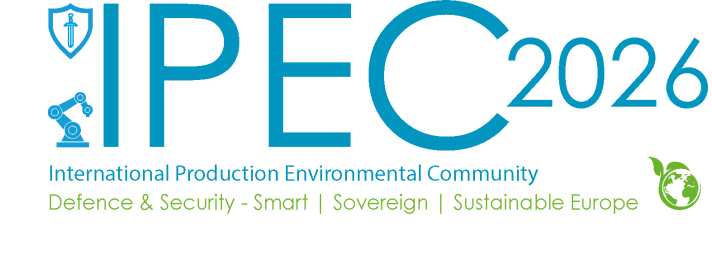

IPEC 2026: la Commission européenne met l'IA industrielle souveraine au premier plan
L'événement officiel IPEC 2026, publié par la Commission européenne et tenu le 17 mars 2026, confirme un signal fort: l'IA industrielle souveraine devient un sujet d'exécution concret pour la défense, la sécurité et les infrastructures critiques européennes.

1. Ce qui est annoncé officiellement
La page officielle de la Commission décrit IPEC 2026 comme un rendez-vous centré sur des technologies appliquées pour la sécurité et la base industrielle européenne. Parmi les thèmes explicitement listés: les solutions de défense pilotées par IA, les logiciels embarqués sécurisés et l'IA industrielle souveraine.
2. Pourquoi c'est stratégique pour l'IA souveraine
Le cadrage est important car il relie la souveraineté IA à des cas d'usage à criticité élevée, pas seulement à la conformité documentaire. Cela pousse les organisations à traiter en même temps chaîne de valeur, contrôle des dépendances technologiques, et capacité opérationnelle sur le territoire européen.
3. Ce que les organisations doivent enclencher maintenant
Les équipes IT, data et cybersécurité devraient cartographier leurs cas d'usage "mission critique" et qualifier où une exécution souveraine est requise. Cela inclut un plan de dépendances fournisseurs, des exigences de résilience, et des garde-fous de gouvernance pour les composants IA sensibles.
Lancer un audit "IA souveraine industrielle" pour classer les cas d'usage critiques et prioriser les exigences d'architecture et de conformité.
Démarrer l'audit